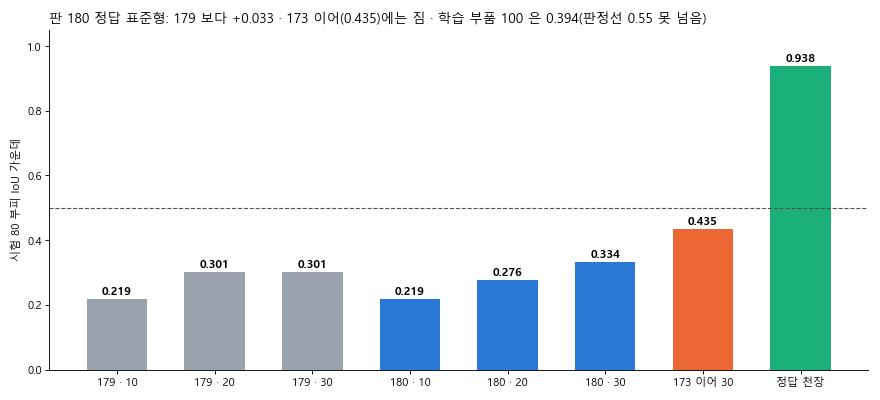

실험 m2_tr0180_h000_정답표준형
180 정답 표준형 — 같은 모양을 한 가지 숫자로만 적으면 배우나 (11-10 · 모델180.py · 손으로 정리)
분석
한 줄로
물음: 179 가 배운 부품도 못 맞힌 것(0.37)이 같은 모양을 여러 숫자로 적은 정답 탓인가?
답: 일부만. 정답을 한 가지 꼴로 고치니 깊이 뭉갬은 풀렸고(상관 0.53 → 0.83) 시험 80 은 0.334 로 179 보다 +0.033 올랐지만, 배운 부품 100 은 0.394 로 판정선 0.55 를 못 넘었고 173 이어(0.435)에도 졌다(짝 16 승 49 패).
왜 이 판을 했나
tr179 진단에서 정답이 한 가지 꼴이 아니었다(평면 자리 34 % · 남는 꼭짓점 46 % · 범위 34 배 튐). 모델이 범위 · 꼭짓점을 평균으로 뭉갰다.
바꾼 것 하나
정답 표준형. ① 스케치 평면 = 언제나 바닥 면(꼭짓점 · 원 가운데를 법선 × 시작만큼 옮기고 범위 = [0, 깊이]) ② 한 줄 위 꼭짓점은 빼고 가장 긴 변 가운데에 넣어 8 개 ③ 범위 끝은 부품 안으로 자름. 망 · loss · 학습은 179 와 같다.
결과

| 시험 80 부피 IoU 가운데 | 10 | 20 | 30 | 판정선 |
|---|---|---|---|---|
| 180 | 0.219 | 0.276 | 0.334 | 173 + 0.03 |
| 179 | 0.219 | 0.301 | 0.301 | |
| 173 이어 30 | 0.435 | |||
| 배운 부품 100 | 0.394 | > 0.55 |
관문: 고친 정답을 다시 지어도 천장 0.938 그대로(모양은 안 바뀌고 숫자만 바뀜) · 고친 뒤 바닥 아닌 평면 0 %.
왜 이렇게 나왔나
확인한 것
- 깊이(범위 끝) 상관: 배운 부품 0.83(예측 퍼짐 0.308 · 정답 0.351) → 뭉갬은 풀렸다. 시험 0.64.
- 다각형 무게중심 상관: 배운 부품 0.65 · 시험 0.31 → 단면을 어디에 놓나가 가장 약하다.
- 검증 loss 는 20 바퀴에서 바닥인데 시험 IoU 는 30 바퀴까지 오른다.
- 칸 순서 애매함(전부 더하기 설계인데 시간 순서 ≠ 부피 순서)은 설계의 약 5 %.
짐작 (아직 확인 안 함)
- 배운 부품도 0.39 인 것은 정답 꼴이 아니라 이 칸(꼭짓점 24 숫자)을 그림에서 읽는 일 자체가 어렵기 때문일 수 있다.
한계
- 시드 하나 · 30 바퀴 · 시험 80.
- 「한 줄 위 꼭짓점 0 %」 확인은 가운데 넣기 자체가 한 줄 위 점을 만들어서 내 검사로는 잴 수 없었다.
배운 것과 다음
정답 꼴을 고치면 뭉갬은 풀리지만, 이 문법으로는 173 을 못 이긴다.
- 지금까지가 주먹구구였다는 회고 → 목표와 자부터 다시(tr181).